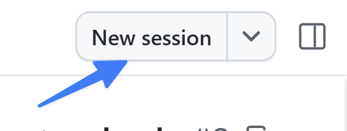
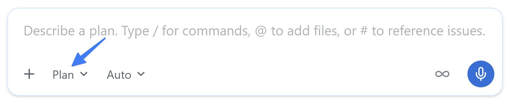
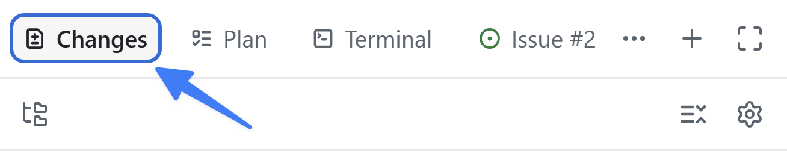

この章の進め方： App を使える場合は以下の本文を進めます。UI で止まった場合は、この章の CLI 代替手順を使い、同じ章の合流条件を確認してください。
ここまで、プロジェクトに小さな更新をいくつか加えました。しかし、より本格的な変更には、よりしっかりしたプロセスが必要です。GitHub Copilot app は既存のフローと連携できるように設計されており、適切なものを適切な方法で構築できます。このレッスンから3回にわたり、一般的な開発プロセスに従います。まず Issue を使って新機能を生成し、エージェントスキルで検証テストと linter を実行します。
このレッスンでは、次の内容を学習します。
- フィルター機能に関する Issue から新しいセッションを開始する。
- Plan モードで機能を計画し、Autopilot で構築する。
- 生成されたコードが、以前マージしたドキュメント標準に従っていることを確認する。
- プロジェクトの
quality-checksスキルで作業を検証する。
シナリオ
ホームページにはすべてのゲームが一覧表示されますが、訪問者は一覧を絞り込めません。フィルター機能に関する Issue では、カテゴリーとパブリッシャーでゲームを絞り込めるようにすることが求められています。Copilot を使ってこの機能を実装します。
背景
AI コーディングエージェントを開発フローに導入しても、基本は変わりません。むしろ、基本はさらに重要になります。多くの開発者は、次のようなフローに従います。
- 必要な作業の詳細が記載された Issue を開く。
- 構築する内容の計画を作成する。
- コードを構築してレビューする。
- テストを実行してコードを検証する。
- 新機能を手動で検証する。
- pull request (PR) を作成する。
- コードのレビューと継続的インテグレーションプロセスが成功したら、コードをマージする。
補足 正確な手順はチームや Organization によって異なりますが、多くの場合は上記の流れを変形したものです。
この標準的なアプローチを守ることで、AI が生成したコードが定められた要件を満たし、人間が作成したコードと同じ審査プロセスを通るようにできます。
セッションモード
セッションモードは、エージェントの自律性を制御します。プロンプトフィールド下のドロップダウンから設定し、いつでも変更できます。
- Interactive: ユーザーとエージェントが共同で作業します。エージェントは変更を提案し、続行前に入力を待ちます。
- Plan: エージェントが最初に計画を作成します。計画実行前に内容をレビューして承認します。
- Autopilot: エージェントが完全に自律して作業し、入力を待たずにコードの作成、テストの実行、反復を行います。
フィルター機能を計画する
潜在的な問題を見つける最適なタイミングは、コードを作成する前です。そのためには、事前に少し計画を立てるのが効果的です。Copilot と計画を立てると、一連の手順と採用するアプローチが生成されます。その計画をレビューし、改善案があれば提案してから、計画に基づいて Copilot にコードを生成させることができます。
Issue を開いて新しいセッションを開始し、Plan モードに切り替えて計画を作成します。
- ナビゲーションタブから My work を選択します。
- Allow users to filter games by category and publisher というタイトルの Issue を選択します。
- 右上の New session を選択します。

- モードに Plan と表示されるまで Shift+Tab を選択します。

- 次のプロンプトを送信します。Issue から開始したため、フィルター機能の Issue はすでにこのセッションのコンテキストに含まれています。
Issue に記載された要件に基づいて作業を計画してください。計画中に不明点があれば質問してください。- 計画の作成中に、エージェントから追加の質問が提示される場合があります。自分で機能を構築するときの方針に基づいて回答します。
補足 Copilot は確率的に動作するため、追加で尋ねられる質問は異なります。質問がまったくない場合もありますが、問題ありません。
- 完了すると、Copilot が計画の概要を提示します。計画をレビューしてください。クエリの構築、フィルターコントロールの追加、テストの作成が提案されているはずです。必要に応じてフィードバックを返して改善できます。エージェントは提案を新しいバージョンに反映します。
Autopilot で構築する
計画が完成したので、Copilot に実装を構築させます。
- Plan summary ダイアログのオプション一覧で、Approve and implement with autopilot に最も近いオプションを選択します。
Copilot が実装作業を開始します。
補足 Copilot が必要なコードの作成を自動的に開始しない場合は、「確認した計画に沿って実装を開始してください」のようなプロンプトを使って開始を依頼できます。
必要な更新の作成には数分かかります。エージェントはファイルを編集および作成し、テストを作成して実行し、反復します。この時間に、ここまで学習した内容を振り返ったり、飲み物を用意したりできます。
変更をレビューする
AI が生成したすべてのコードは、マージ前にレビューする必要があります。コードをレビューし、サイトを実行して問題がないことを確認します。
- 右上の Changes を選択してコードの変更を開きます。

- 変更をレビューします。新しい TypeScript ファイル、Astro ファイル、テストファイルが表示されます。新しいヘルパー関数には、レッスン3でマージしたドキュメント標準に従い、依頼していなくても TSDoc doc comment とファイルヘッダーコメントが含まれていることを確認します。
- Copilot app の右側にあるレビューパネルで Terminal を選択します。Terminal ボタンがない場合は、+ (Open in panel というラベルが付いています) を選択してから Terminal を選択します。

- ターミナルウィンドウに次のコマンドを入力し、Web アプリの開発サーバーを起動します。
npm run dev- サーバーが起動したら、ブラウザーウィンドウを開きます。起動には少し時間がかかります。
- http://localhost:4321 に移動します。
- ランディングページでフィルターを使用できることを確認します。
- 問題がある場合は、Copilot に更新を依頼できます。
- 問題がなければ、ターミナルウィンドウに戻ります。
- Ctrl+C を選択して開発サーバーを停止します。
quality-checks スキルで作業を検証する
差分を目視で確認するだけで完了とすることもできますが、このチームには明確な品質基準と、それを繰り返し確認する方法があります。
エージェントスキルを使うと、テストの実行、ビルドの生成、pull request の作成など、繰り返し発生するタスクの実行方法を Copilot に指示できます。スキルは、エージェントが必要に応じて読み込める指示、スクリプト、リソースのフォルダーです。Agent Skills はオープン標準であり、さまざまなエージェントで使用されています。そのため、同じスキルをエージェントモードの Copilot Chat、Copilot cloud agent、Copilot CLI、GitHub Copilot app で使用できます。
スキルはプロジェクトの .github/skills フォルダー、またはグローバルの ~/.copilot/skills に配置します。各スキルは、YAML frontmatter (name と description) と、それに続く Markdown の指示が記載された SKILL.md ファイルを含むフォルダーです。
---
name: quality-checks
description: Run the project's test suites and linter to verify code changes are ready to commit, push, or merge.
---スキルには、スクリプト、アセット、参考資料を含むサブフォルダーも追加できます。完全な構造については、エージェントスキルの仕様を参照してください。
ヒント スキルは動的に読み込まれます。エージェントは
descriptionフィールドに基づいて適用するスキルを判断します。明確でシナリオに合った説明を記述することが、スキルが使用されるか無視されるかを左右します。
quality-checks スキルを確認する
スキルの内容を確認します。
- レビューパネルが表示されていない場合は、右上の Toggle review panel を選択して開きます。

- + を選択し、レビューパネルに新しい項目を追加します。
- File を選択します。
SKILL.mdを検索します。- ファイル一覧から
SKILL.md .github/skills/quality-checksを選択して開きます。 nameとdescriptionを確認します。説明は、コード変更を commit、push、merge する前にテスト、lint、検証する必要がある場合に、このスキルを使用することをエージェントに伝えます。- スキル全体を読みます。単体テスト、Playwright のエンドツーエンドテスト、ESLint の各スイートを実行するスクリプト、実行順序、一般的な失敗のデバッグ方法が記載されています。そのため、エージェントは推測するのではなく、チームの方法でチェックを実行できます。
チェックを実行する
同じフィルター機能のセッションで、エージェントに作業の検証を依頼します。スキル名を説明する必要はありません。エージェントがリクエストに一致するスキルを見つけます。
- Copilot app に戻ります。
- スラッシュコマンド
/quality-checksを使ってスキルを直接呼び出し、Enter を選択します。 - エージェントはスキルに従って単体テスト、linter、エンドツーエンドテストを実行し、結果を報告します。失敗したものがあれば、問題を修正して、すべて成功するまでチェックを再実行するよう依頼します。
- このセッションを開いたままにします。 次のレッスンでは Playwright MCP server を追加し、実際のブラウザーでフィルター機能が動作することを確認します。
CLI 代替手順：同じフィルター機能を計画・実装する
演習2・3の変更を含む既定ブランチから feature/app-04-filtering などで開始します。App で着手済みなら、そのセッションの同じ worktree・ブランチを使います。自分のコピーのフィルター Issue 本文を貼り付け、/plan（利用できなければ通常の対話）で次を依頼します。
この Issue に従って、カテゴリーとパブリッシャーでゲームを絞り込む計画を作ってください。
星評価を維持し、既存の指示と差分を確認してください。
publisher helper が存在するとは仮定せず、現在の実装から必要な変更を判断してください。
選択方式、複数条件の意味、解除、該当なし、再読み込み時の状態を確認し、
受け入れ条件とテスト計画を示してください。まだ実装しないでください。計画への質問に答え、内容を確認したら実装を依頼します。App の Autopilot を使えなくても、通常の CLI 対話で計画を承認し、必要な操作を許可して進められます。
確認した計画を実装し、.github/skills/quality-checks/SKILL.md を読んで
その手順で検証してください。スキルを読み込めたか、実行コマンド、結果、
未確認項目を報告してください。commit・push・PR・merge はまだ行わないでください。合流条件： 要件に沿うフィルター、星評価の維持、新しいコードの指示準拠、quality-checks の成功と差分レビュー。スキルが呼び出せず同じコマンドを手動実行した場合は、スキル体験を未実施と記録します。演習5へは同じブランチ・未マージの機能を引き継ぎます。
まとめと次のステップ
実際の機能をエンドツーエンドで構築し、チームの基準に照らして検証しました。具体的には、次の作業を行いました。
- 最新のプロジェクトで、フィルター機能に関する Issue から新しいセッションを開始した。
- Plan モードで機能を計画し、Autopilot で構築した。
- 生成されたヘルパーが、レッスン3でマージしたドキュメント標準に従っていることを確認した。
quality-checksスキルで作業を検証した。
次は Playwright MCP server を接続し、実際のブラウザーでフィルター機能を確認するようエージェントに依頼します。レッスン 5「Playwright MCP server によるテスト」に進んでください。